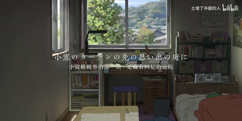
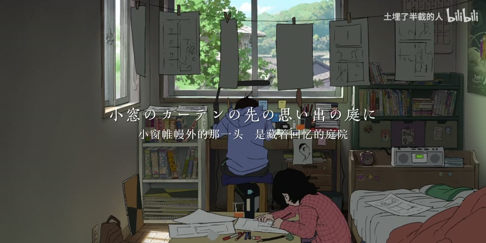
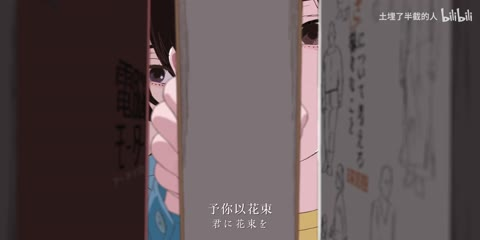
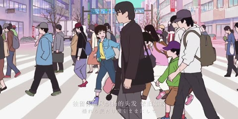
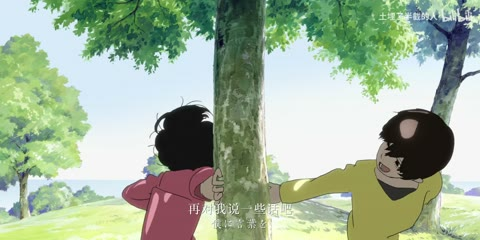
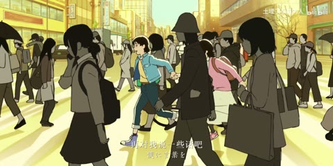

分析单元 01 / 4—12秒
居中双语细衬线歌词／暗场排版
实际观察
较细白字置于画面中央，日文主行和中文小行分层；人物暗色背景。
表达作用（教学解读）
将平面关系变成有前后层次的观看空间；小幅运动可以放大情绪。
具体应用场景
静止画MAD、回忆、图像故事、海报动态化、人物介绍。
复现建议（非原作者工程还原）
字幕分层、字号对比、阴影及透明度；暗化背景可用亮度曲线。
直出判断：容易，字体及行距需匹配
常见误用：所有层同速或反向乱动；人物像纸板；补洞不完整；视角变化超出原画信息。
H04 / 主要视觉研究样本
同一房间的前后时间与画稿形成关系；特效可以克制。学习相同镜位如何承载失去、成长与记忆，而不是只看效果密度。

从画面里找依据
同一房间不同时间保持镜位骨架，多屏画稿和悬浮漫画页呼应绘画主题，情绪由选材和前后对照建立。
暗背景居中双语细字清楚，分屏保留主脸与手部；亮窗/花园段白字幕对比需要按稳定帧读，不能由缩图保证全程。
漫画改编、人物回忆、纪念、故事提案、海报动态化、低动作但高情绪密度的段落。
教学提问：前景、中景、背景分别是什么？如果镜头移动，原图未画出的部分由谁补齐？
图像标出取样时间，对应观察中的关键状态。单帧不能独立证明运动，连续性请结合摘录。表达作用与应用场景是教学解读，复现路线是建议，不是原作者工程还原。
分析单元 01 / 4—12秒
较细白字置于画面中央，日文主行和中文小行分层；人物暗色背景。
将平面关系变成有前后层次的观看空间；小幅运动可以放大情绪。
静止画MAD、回忆、图像故事、海报动态化、人物介绍。
字幕分层、字号对比、阴影及透明度；暗化背景可用亮度曲线。
直出判断：容易，字体及行距需匹配
常见误用：所有层同速或反向乱动；人物像纸板；补洞不完整；视角变化超出原画信息。
分析单元 02 / 16—24秒
16秒雪景、房屋与车门分为不同矩形；20秒铺满素描姿势；24秒人物被黑色窄条分区。仅概览，不推断全程转场轨迹。
让多个时间、视角或人物关系同时出现；通过对位建立联系，而非只提高画面数量。
记忆、对话、关系对照、主观视点、多人角色介绍、跨素材呼应。
矩形遮罩、不同源裁切与分层显隐。
直出判断：容易，需准备对应素材
常见误用：窗口太多无主次，眼位错位、边框挤脸，层的出现没有叙事理由。


H04 · 原作约32—40秒
分析单元 03 / 32—40秒
相近室内构图里，人物与光线、窗外景色发生变化，保留房间骨架形成前后呼应。
通过变化与稳定的比例让信息有轻重。视觉密度来自切镜、版式与局部动画三个层面，不只靠刀数。
所有形式；尤其高潮前的蓄力、解释段的阅读、回忆段的停留和快慢对照。
选同角度片段对齐裁切、叠化或硬切；叙事效果来自素材选择。
直出判断：已有对位素材后容易，不能凭程序生成原画
常见误用：全片等密度；把闪帧当新镜；高切速被当成质量分；没有稳定段供观众理解。


H04 · 原作约60.5—62.5秒
分析单元 04 / 60.5—62.5秒
书边人物切书店广角，再切斑马线人群，末尾转黄昏电线杆；没有额外花哨遮罩。
利用相邻镜头改变理解，使原来无关的画面形成主题、对比或关系。
纪念、广告、人物关系重组、旅行随笔、社会观点、品牌回顾。
裁切片段、统一画幅及字幕时间轴。
直出判断：容易，素材衔接需判断
常见误用：素材只因好看而排列；上下文失真；借剪接制造未经支持的事实判断。


H04 · 原作约68.5—70.5秒
分析单元 05 / 68.5—70.5秒
牵手穿过人群→两人绕树奔跑→踏雪近景；人物运动方向提供联系，雪花是所用动画内容。
通过变化与稳定的比例让信息有轻重。视觉密度来自切镜、版式与局部动画三个层面，不只靠刀数。
所有形式；尤其高潮前的蓄力、解释段的阅读、回忆段的停留和快慢对照。
按动作方向与景别编排；雪花可另做粒子但不可将原作效果归功UP。
直出判断：剪接容易，连贯人物动作需原素材
常见误用：全片等密度；把闪帧当新镜；高切速被当成质量分；没有稳定段供观众理解。
分析单元 06 / 72—76秒
书页或漫画画面叠在海底、夕阳原画前面；前后层级清楚。
让多个时间、视角或人物关系同时出现；通过对位建立联系，而非只提高画面数量。
记忆、对话、关系对照、主观视点、多人角色介绍、跨素材呼应。
图片透明图层＋位移、旋转、缩放；边缘和遮挡需检查。
直出判断：基础版容易
常见误用：窗口太多无主次，眼位错位、边框挤脸，层的出现没有叙事理由。
保留原研究的多段局部摘录。片段含音轨不代表已听审；本资料不评价音乐卡点或对白节奏。
60.5–62.5秒书边→书店→街道→黄昏3次，68.5秒动作方向接续2次；人群/雪花是源动画内部变化。
把镜头连接、版式更新、局部图层变化和镜内运动分开记录。所查窗口是下限，不是全片平均或AI／人工排名。
原始逐窗记录 →一张有权使用的图片分三层，制作6秒镜头：先只推拉，再加视差，最后加一层前景；比较情绪是否更明确。
先写“我希望观众明白／感到什么”，再选本页的一种手法。完成无效果基础版后再加层；解释新增层带来的收益和代价。
打开练习与复盘表 →实际检查范围：31张全片4秒概览及60.5–62.5、68.5–70.5秒15fps密集帧已实际检查。源媒体4096×2048/60fps。未实际听审音轨。
制作线索：土埋了半截的人；第一方页面81.4万；作者描述五月起草、放弃、重新打开草稿并完成，素材《蓦然回首》。作者自述不等于软件和全部制作步骤已独立核验。
边界：原作蓦然回首的美术、动作与UP选材/分屏分开；特效少不判差，作者草稿过程仅自述。
播放快照保存时间（UTC）：2026-10-20T00:36:37.338529+00:00。H30制作方式为推定；同源改编、仿作和转载依原记录标注。
原始案例记录 · 选样表笔记仅尝试保存在本机浏览器；浏览器策略可能限制本地文件存储，重要内容请导出。